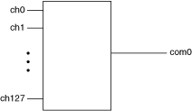

Use the NI TB-2630/2630B terminal block with the NI PXI-2530/2530B as a 1-wire 128×1 multiplexer. In this topology, all channel terminals (CH0 through CH127) route to COM0. A reference, 1WREF0, always remains connected to COM1. The pair, COM0 and COM1, is provided for convenient connectivity to a 2-wire device, such as a DMM.
When using the 1-wire 128x1 topology, COM1 connects only to 1WREF0 and can optionally be used to route the second wire of a differential signal through the switch. This is useful to keep the path lengths and routing conditions similar on the differential pair, but is not necessary.
The following figure represents the NI PXI-2530/2530B in the 1-wire 128×1 multiplexer topology.

Both the scanning command, ch2->com0;, and the immediate operation, niSwitch Connect Channels VI or the niSwitch_Connect function with parameters ch2 and com0, result in the following connection:
signal connected to CH2 is routed to COM0
Refer to the NI PXI-2530 Signal Connections section for the NI PXI-2530 front connector pinout and NI TB-2630 terminal mapping. Refer to the NI PXI-2530B Signal Connections section for the NI PXI-2530B front connector pinout and NI TB-2630B terminal mapping.